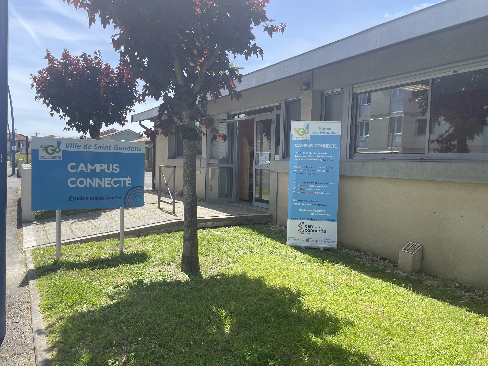
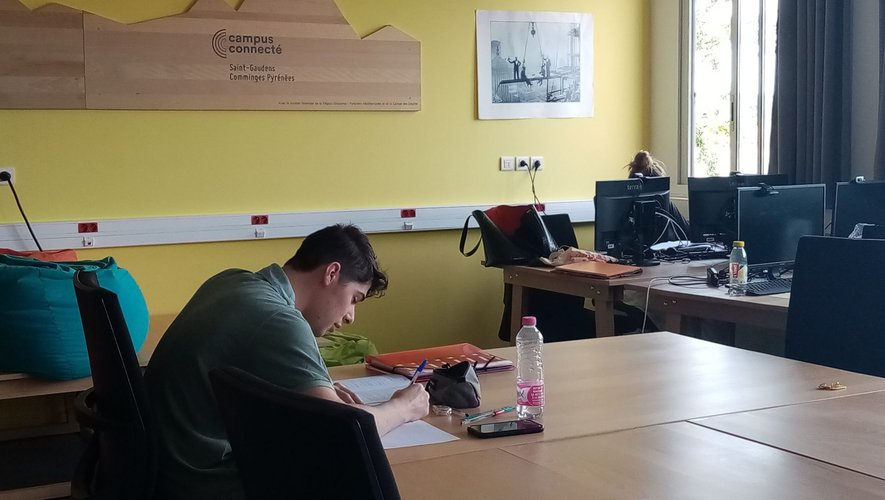
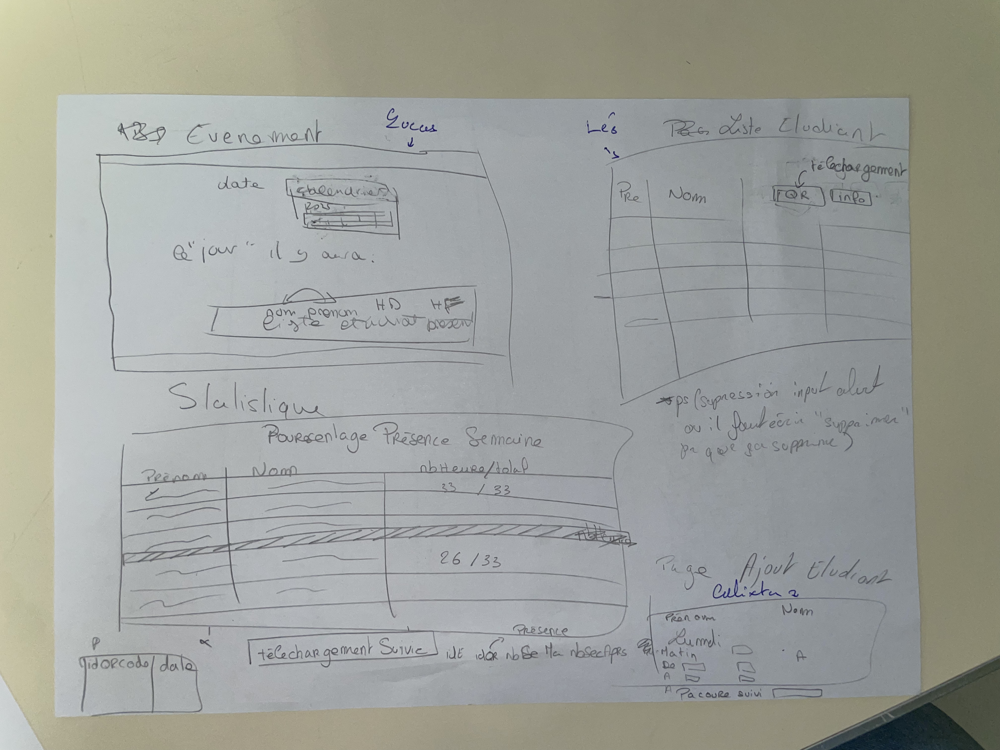
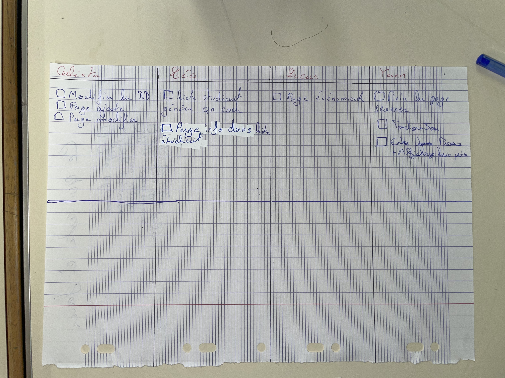
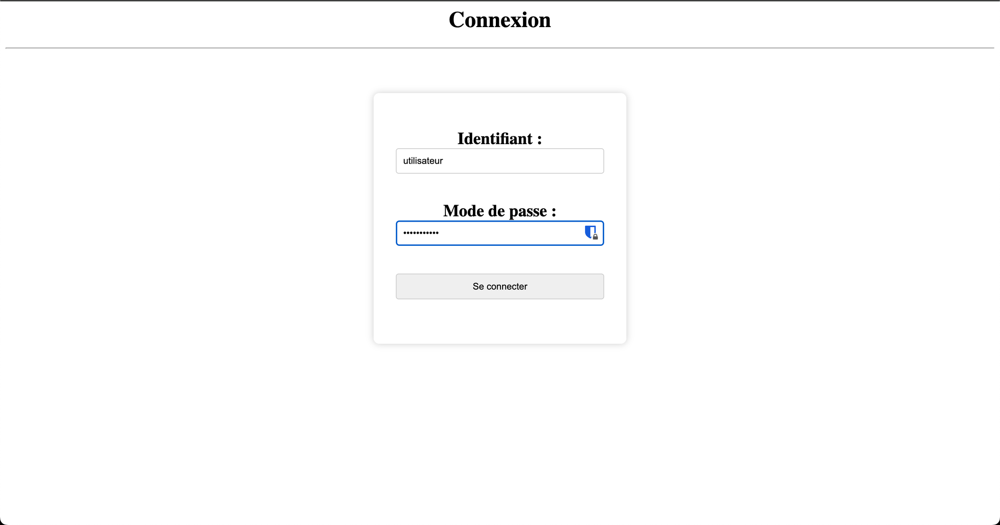
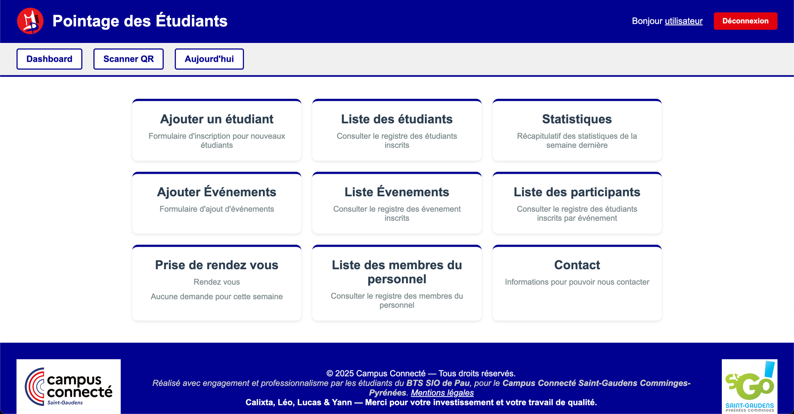
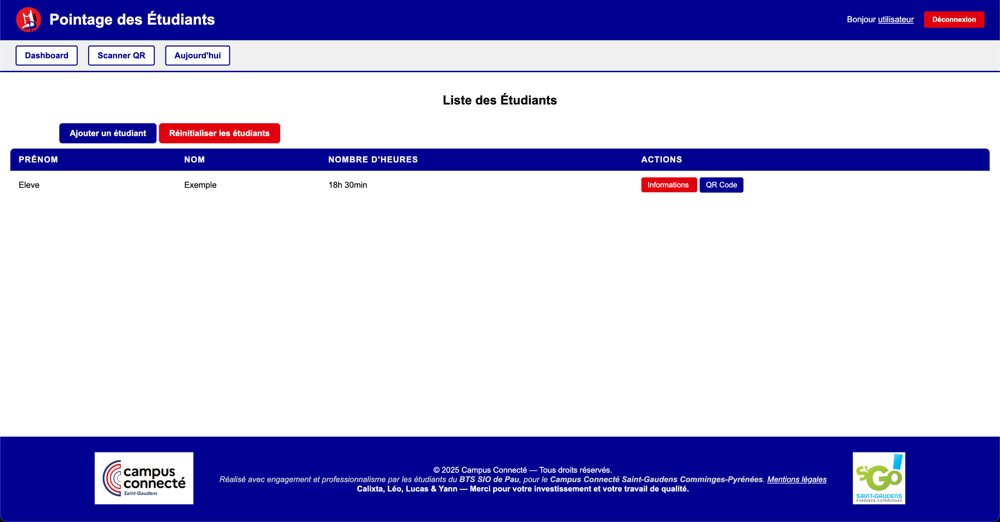
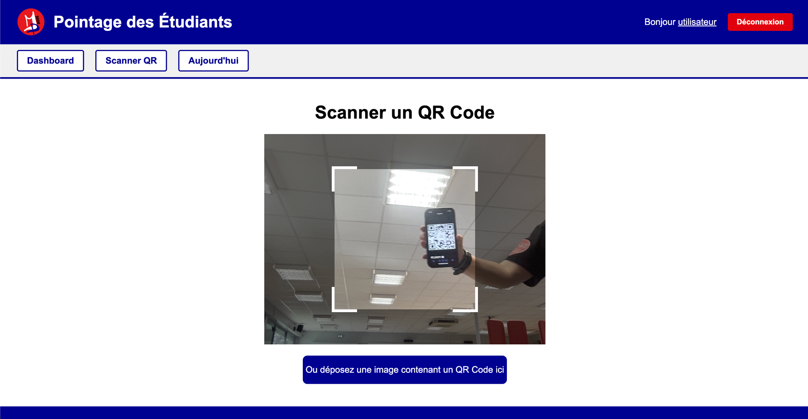
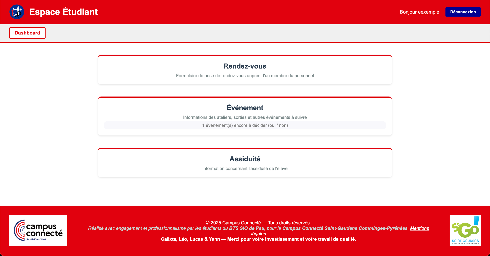

Développement d'applications web (MP3000 & MTPP) et mise en place d'une infrastructure serveur pour la Mairie de Saint-Gaudens.
Intégration au sein de l'équipe du Campus Connecté de Saint-Gaudens. L'objectif initial était de migrer le site existant et de développer des outils internes pour la gestion des étudiants. Nous avons commencé par une phase de découverte des lieux et des besoins avec l'équipe.


Le projet "Marcel Présence 3000" vise à gérer le pointage des étudiants. Nous avons commencé par des réunions de brainstorming et des croquis sur papier pour définir l'UI/UX avant de passer au code. Organisation du travail en équipe via GitLab.


Mise en place d'un serveur dédié pour héberger les applications et la base de données. Le défi a été de transformer un PC Windows 7 en serveur Linux Ubuntu fonctionnel avec une stack Docker complète.
Réalisation de l'application de pointage. Authentification, génération de QR Codes uniques pour chaque étudiant, et gestion des sessions sécurisées.

Sécurisation SQL & Sessions PHP.

Navigation centrale avec cartes.

Liste dynamique, Modals, et Actions.

Algorithme de génération d'ID unique.
function genererIdQrCode($longueur = 25) {
// Ensemble des caracteres qu'on peut utiliser
$caracteres = '0123456789abcdefghijklmnopqrstuvwxyzABCDEFGHIJKLMNOPQRSTUVWXYZ';
$idQrCode = '';
$maxIndex = strlen($caracteres) - 1;
for ($i = 0; $i < $longueur; $i++) {
// Utilise une fonction cryptographiquement sécurisée
$index = random_int(0, $maxIndex);
$idQrCode .= $caracteres[$index];
}
return $idQrCode;
}
Lancement du second projet "Massin Tout Petit Plus" (Gestion d'événements).
Partage de la base de données avec MP3000.
Défi Final : Le déploiement sur le serveur central a posé un problème technique
majeur le dernier jour (accès caméra bloqué sans SSL/HTTPS sur IP locale).
Solution de contournement : Déploiement distribué. Chaque poste du campus fait
tourner le site en local (Uwamp) tout en se connectant à la base de données centralisée sur le
serveur.

Rédaction d'une documentation technique et utilisateur complète pour assurer la pérennité des outils après mon départ. Passation de connaissances à l'équipe encadrante.